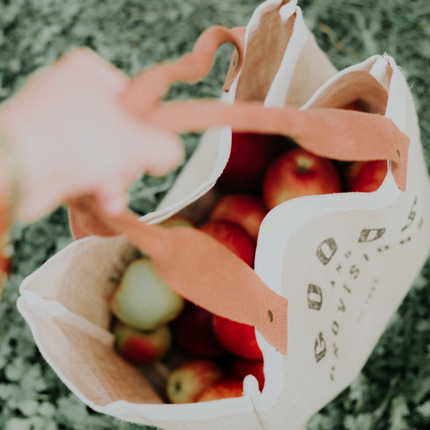

WELCOME TO MAIZE & BLUE CUPBOARD
OUR MISSION
To ensure members of the University of Michigan community—whether on a tight budget or physically restrained from getting to a grocery store—receive equitable access to healthy, nutritious, and nourishing food and the ability to prepare it for themselves or others.

WHAT WE PROVIDE
FOOD
Produce, dairy, meat, bread, frozen and shelf-stable foods (i.e. rice, cans, tuna, etc.)
KITCHEN & COOKING
Dishes, silverware, pots & pans, Tupperware, cutting boards, knives, and other kitchenware
PERSONAL & HOUSEHOLD
Trash bags, toilet paper, cleaning supplies, hygiene products, school supplies, baby items and more
NEWS
Fall 2024 Mobile Distribution for North Campus
U-M’s Maize & Blue Cupboard (MBC), the College of Engineering, Student Life, and Ann Arbor-based Food Gatherers will host North Campus mobile food distributions to make MBC resources more accessible for North Campus residents.

Mobile Distribution for North Campus — Fall 2023 Semester
Students who live on North Campus have easier access to free groceries thanks to U-M’s Maize & Blue Cupboard (MBC), the College of Engineering, Student Life, and Ann Arbor-based Food Gatherers.
Thanksgiving Food Drive & Special Distribution Event - November 2024
To ensure that every student has access to nutritious food this holiday season, U-M’s Maize & Blue Cupboard (MBC) will host a Thanksgiving food drive, featuring a variety of holiday staples and fresh produce. North Campus residents are encouraged to attend and bring reusable bags.